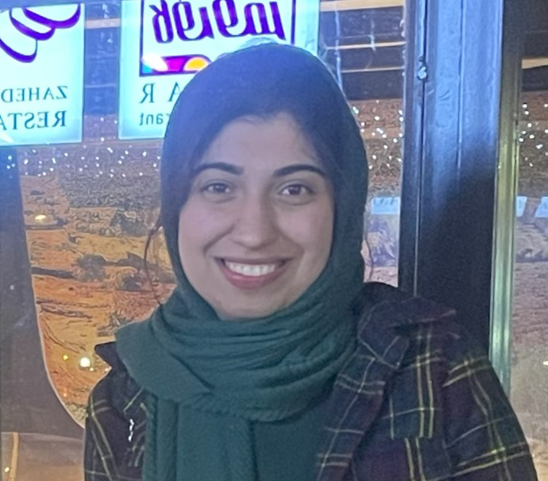

Mahla Sharifi
B.Sc. Student in Computer Engineering
I am a dedicated Computer Engineering student at Amirkabir University of Technology, specializing in Software Engineering and Networks. My passion lies in exploring Serverless Computing, Cloud Computing, and Computer Networks. I am eager to contribute to innovative projects and expand my knowledge in these fields.
Research Interests
- Serverless Computing
- Cloud Computing
- Computer Networks
- Software Engineering
Languages
- Persian: Native proficiency
- English: Professional working proficiency

Education
Amirkabir University of Technology (Tehran Polytechnic)
B.Sc. in Computer Engineering (Major in Software Engineering and Networks), Tehran, Iran
September 2019 - October 2024 (Expected)
GPA: 18.60/20 (3.92/4), GPA in Major: 4/4
National Organization for Development of Exceptional Talents (NODET)
High School Diploma in Mathematics and Physics
September 2015 - June 2019
GPA: 19.60/20 (4/4)
Research Experience
Enhancing Serverless Benchmark Suite (SeBS) Project
June 2024 - PresentSupervised by:
- Marcin Copik, ETH Zürich, Switzerland
- Developing custom wrappers, base images, and automation scripts to enable automatic benchmarking of Java-based functions across different serverless platforms, including OpenWhisk, AWS Lambda, Google Cloud Functions, Azure Functions, and Knative.
- Building storage wrappers for five different storage solutions—including Google Cloud Storage, AWS S3, Azure Blob Storage, and MinIO for OpenWhisk and Knative—ensuring compatibility of developed functions across different environments.
Performance Benchmarking of Serverless Platforms in Microservice Applications
September 2023 - PresentSupervised by:
- Dr. Mahmoud Momtazpour, Amirkabir University of Technology
- Marcin Copik, ETH Zürich, Switzerland
- For my B.Sc. thesis, I started research in the serverless domain, involving article reviews and communication with contributors of various open-source projects, which led to collaboration on SeBS (Serverless Benchmark Suite) from the Scalable Parallel Computing Laboratory at ETH Zürich.
- Transformed each API of the TeaStore, a microservice test application for cloud management, into Functions-as-a-Service (FaaS).
- Integrated developed benchmarks into SeBS by designing new structures and conducting a comprehensive analysis of the results.
Teaching Experience
Software Testing
Fall 2024 (Present)- Under the supervision of Dr. Faeze Gohari.
- Develop and grade assignments.
Computer Networks (Head Teaching Assistant)
Fall 2023
Winter 2023
Winter 2022
- Under the supervision of Dr. Masoud Sabaei.
- Created a question bank from 10 years of course questions for future teaching assistants.
- Conducted review sessions, developed, and graded assignments.
Cloud Computing
Fall 2023- Under the supervision of Dr. Ahmad Javadi.
- Developed, received, and graded projects.
Operating Systems
Fall 2023- Under the supervision of Dr. Hamid R. Zarandi.
- Conducted review sessions, developed, and graded homework assignments.
Discrete Mathematics
Fall 2023- Under the supervision of Dr. Mostafa H. Chehreghani.
- Conducted teaching assistant sessions, developed, and graded homework assignments.
Web Programming
Winter 2022- Under the supervision of Mr. Yaghoub Alizadeh.
- Developed, received, and graded projects.
Advanced Programming
Fall 2021- Under the supervision of Dr. Amir Kalbasi.
- Conducted teaching assistant sessions.
Fundamentals of Programming
Fall 2020- Under the supervision of Dr. Bahador Bakhshi.
- Conducted teaching assistant sessions.
- Designed new questions for the laboratory agenda.
- Designed final project specifications, created exercises, received, and graded practical projects.
Courses
University
- Software Testing (20/20)
- Software Engineering II (20/20)
- Software Engineering I (19.75/20)
- Fundamentals of Computer Programming (19.7/20)
- Architecture of Network Devices (Optional MSc course) (20/20)
- Computer Networks (19.1/20)
- Principles of Cloud Computing (17.66/20)
- Operating Systems (19.81/20)
Online
Skills
Programming Languages:
Java, C, Python | Familiarity: Bash (Scripting language)
DevOps:
Docker, Kubernetes, OpenWhisk | Familiarity: AWS
Data Technologies:
MySQL, Oracle DB, Elasticsearch, Hibernate (ORM for Java), Redis | Familiarity: Hadoop
Operating Systems:
Windows, Linux (Ubuntu)
Other Technologies:
Git, Jira, Jupyter Notebook, HTML, Angular | Familiarity: GitHub Actions (CI/CD)
Notable Projects
Routing Table Manager using MultiBit Trie
Fall 2023- Designed and developed a MultiBit Trie structure for high-performance IP address lookup.
- Implemented real-time updates and visualization, enabling instant feedback after adding each network prefix to the routing table.
- Link to the project: GitHub Repository
APSARA
Fall 2023- Implemented APSARA, a matching algorithm for high-bandwidth input-buffered switches.
- Analyzed the algorithm's results to observe real-world outcomes of theoretical concepts learned in the network devices course.
- Link to the project: GitHub Repository
Cryptocurrency Price Tracker
Winter 2023- Implemented a real-time crypto monitoring application that emails users when subscribed cryptocurrencies meet specified conditions.
- Covered various cloud computing concepts such as Docker, Kubernetes, Compose, CronJob, HPA, and StatefulSet.
- Link to the project: GitHub Repository
MapReduce on Hadoop
Winter 2023- Developed distributed MapReduce programs for analyzing U.S. election-related tweets on a Hadoop cluster.
- Link to the project: GitHub Repository
Enhanced xv6 OS
Winter 2022- Customized the XV6 operating system by adding new system calls, implementing four new CPU scheduling algorithms, and adding thread support.
- Aimed to enhance kernel features and understand low-level OS functionalities.
- Link to the project: GitHub Repository
Ping Watcher
Fall 2022- Implemented a RESTful app for monitoring the availability of specific URLs and sending email notifications when downtime is detected.
- Link to the project: GitHub Repository
Information Retrieval System
Fall 2022- Developed a Python search engine using TF-IDF and champion lists.
- Improved query accuracy through optimized pre-processing.
- Link to the project: GitHub Repository
Postman/cURL Clone
Winter 2019- Developed an HTTP request manager with both console and graphical modes.
- Built using Java, Maven, and Swing.
- Link to the project: GitHub Repository
Work Experience
Full-time Software Engineer (University CO-OP Program)
August 2021 - February 2022
Tosan (Banking and payment solutions provider) - Tehran, Iran
- Collaborated on Dockerizing the Java-based core banking system to enhance operational speed.
- Designed and developed a solution to remotely and asynchronously change the IP addresses of ATMs.
Full Stack Developer Intern
July 2020 - October 2020
CodeStar - Remote
- Selected based on score and code structure in a Java-based competitive algorithmic contest. (Scoreboard)
- Worked in an 8-member team to implement a system for the graph analysis of banking transactions. [GitHub Link]
Extracurricular Activities
Vice President, Students’ Scientific Chapter of computer engineering department
2021 - 2022- Organizing and collaborating many conferences and events to enrich students with opportunities in both industry and academia.
Co-Creator, VisionUp
2021 - 2022- VisionUp was our solution to help our department students experience fewer hardships in accessing information during the pandemic. as fewer higher terms were accisble
- VisionUp conducts friendly sessions, each featuring one guest from our department who is a professional in industry or academia, sharing their personal experiences with students. These sessions are always held in person. YouTube Channel
Scientific Head, 2nd AUT GameCraft
2022- Managed 8-member team responsesponsible for organizing 20 online conference, 4 in-person workshops with more than 20 instructors, in game industry, as well as a competition (game jam)
- The evet attracted totally over 1000 participants.
Chief Organizer, 21st Amirkabir Programming Contest League (ACPC)
2021- ACPC is the primary competition for team selection to the regional ICPC at Amirkabir University and several other universities in Iran.
- Experienced 4-month enjoable hard-working for managing 15 people of different teams including sponsership, tecnical, excutive, marketing, graphic.
- Our hard-work lead to participating of 650 participant in the event. which was a record during these 21 years.
Honors and Awards
- Ranked in the top 10% of the class of the Bachelor program and announced as an outstanding student. 2019 - 2024
- Elected as a member of the Students’ Scientific Chapter by direct vote of students. 2021 - 2022
- Ranked in the top 0.2% of 160,000+ in the national university entrance exam for a B.Sc. in Mathematics and Physics. 2019